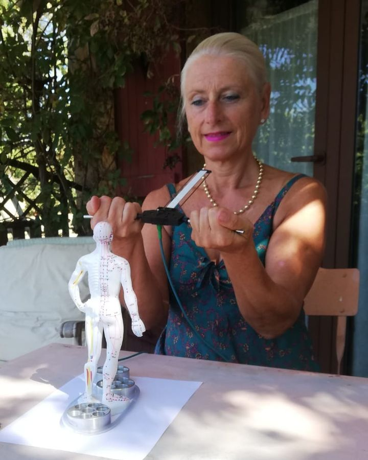
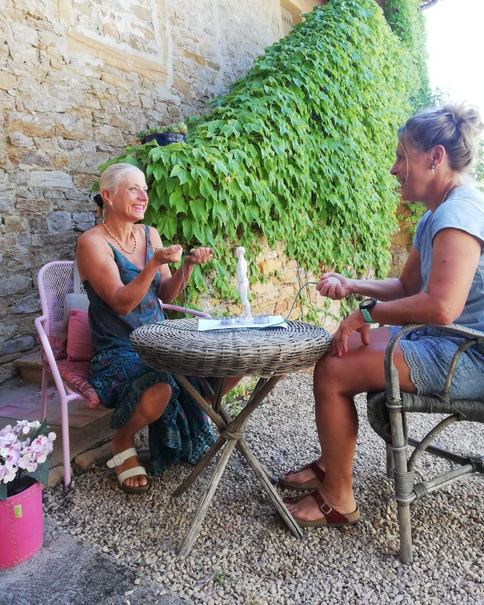
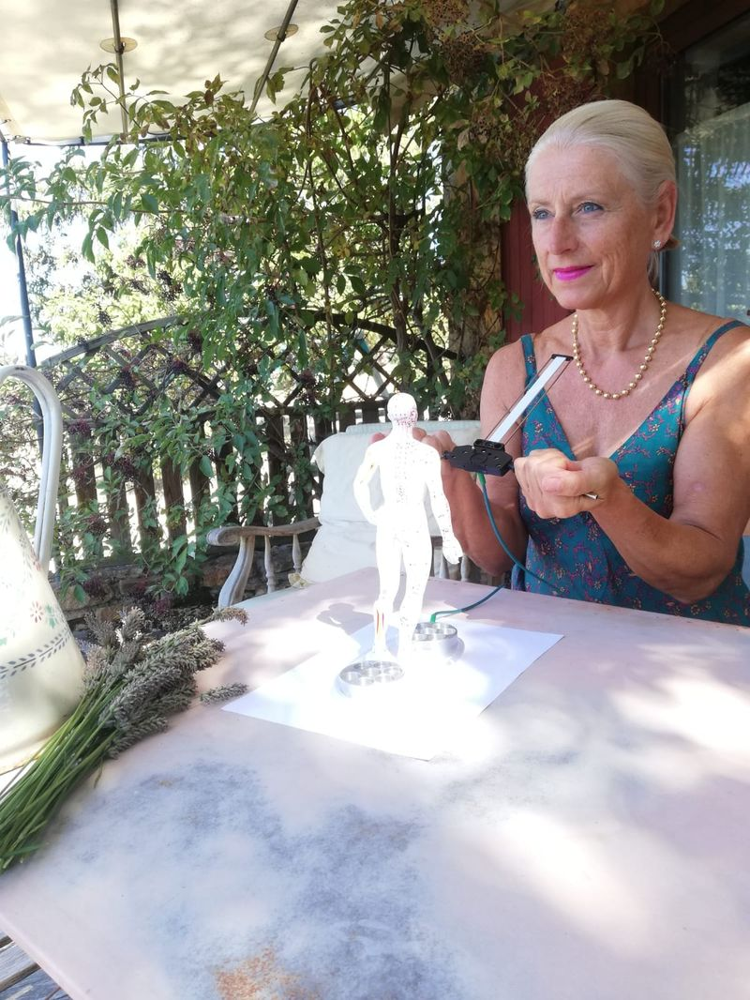
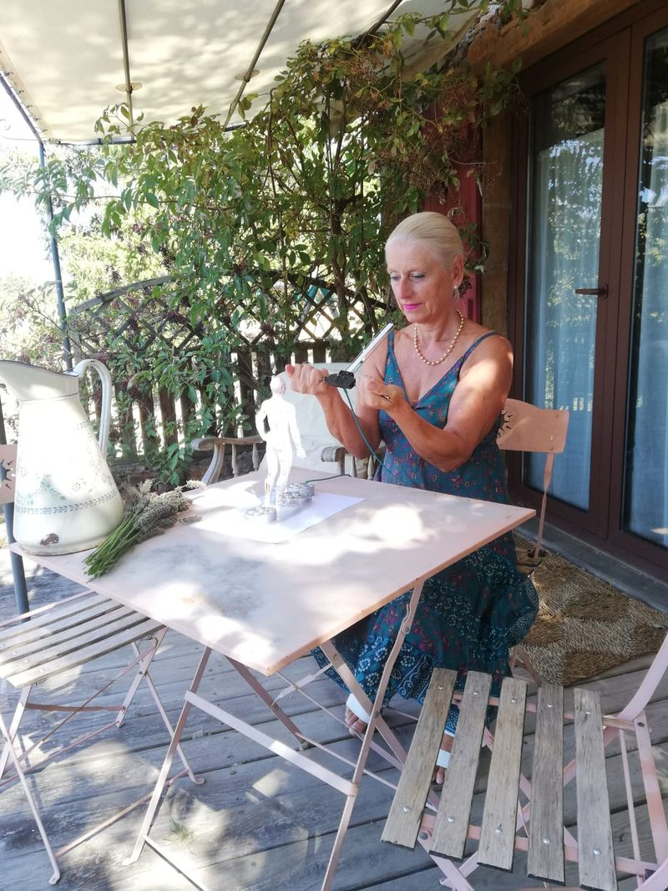

Corps
Réflexologie plantaire
Les zones réflexes du pied, pour une détente profonde de tout le corps.
55 €1 h
Au pied de la Chartreuse · Isère
Un cabinet au calme à Saint-Étienne-de-Crossey pour relâcher les tensions, retrouver de l'énergie et prendre soin de votre équilibre intérieur.
Praticienne certifiéePlus de 23 ans de formationAu cabinet ou à distance

Écouter son corps, apaiser le mental, libérer les tensions accumulées.
Retrouver une relation plus sereine à son entourage et à ses émotions.
Se reconnecter à la nature, aux saisons et à son énergie vitale.
Au cabinet
Entre murs de pierre et vigne vierge. Aux beaux jours, certaines séances se font dehors.



Carte des soins
Chaque séance est ajustée à vos besoins du moment.
Corps
Les zones réflexes du pied, pour une détente profonde de tout le corps.
Corps
Des pressions le long des méridiens, habillé, sur futon.
Énergie
Faire le point sur votre énergie, puis la rééquilibrer. À tout âge.
Énergie
Libérer les énergies lourdes. Au cabinet ou à distance.
Énergie
Harmoniser une maison, un appartement, un local.
Accompagnement
Respiration et relaxation pour le stress et le sommeil.
Accompagnement
Bach et Déva : un conseil pour traverser une période émotionnelle.
Qui suis-je
Sportive passionnée, j'ai découvert la réflexologie après une blessure. Depuis, je n'ai jamais cessé de me former aux techniques de bien-être.
Ces disciplines sont différentes et complémentaires : je les associe selon ce dont chacun a besoin.
Infos pratiques
35 chemin de la Morge, 38960 Saint-Étienne-de-Crossey. Stationnement facile, à quelques minutes de Voiron.
Nettoyages énergétiques et conseils en élixirs floraux possibles en visio ou par WhatsApp, où que vous soyez.
Aucun paiement en ligne : vous réglez à la fin de la séance, en espèces ou par chèque.
Rendez-vous
Choisissez un soin et un créneau. Vous recevez une confirmation par e-mail et un rappel la veille.
Vous préférez en parler d'abord ? Appelez Béatrice au 06 10 47 12 72.
Questions fréquentes
Vous êtes installé confortablement, pieds nus. Après un court échange sur vos besoins, Béatrice travaille les zones réflexes des deux pieds. La plupart des personnes ressentent une détente profonde, parfois dès la première séance.
Béatrice se déplace chez vous, ou travaille à distance à partir d'un plan du lieu. Un premier échange permet de comprendre ce que vous ressentez dans les pièces et ce qui a motivé votre demande.
Certaines mutuelles prennent en charge une partie des séances de réflexologie, de shiatsu ou de sophrologie au titre des médecines douces. Renseignez-vous auprès de la vôtre : une facture vous est remise sur demande.
Non. Ce sont des pratiques de bien-être qui accompagnent votre démarche de santé sans jamais se substituer à un avis ou à un traitement médical.
Contact
Le cabinet accueille des personnes de tout le secteur :
Les nettoyages énergétiques et le conseil en élixirs floraux se font aussi à distance, partout en France.